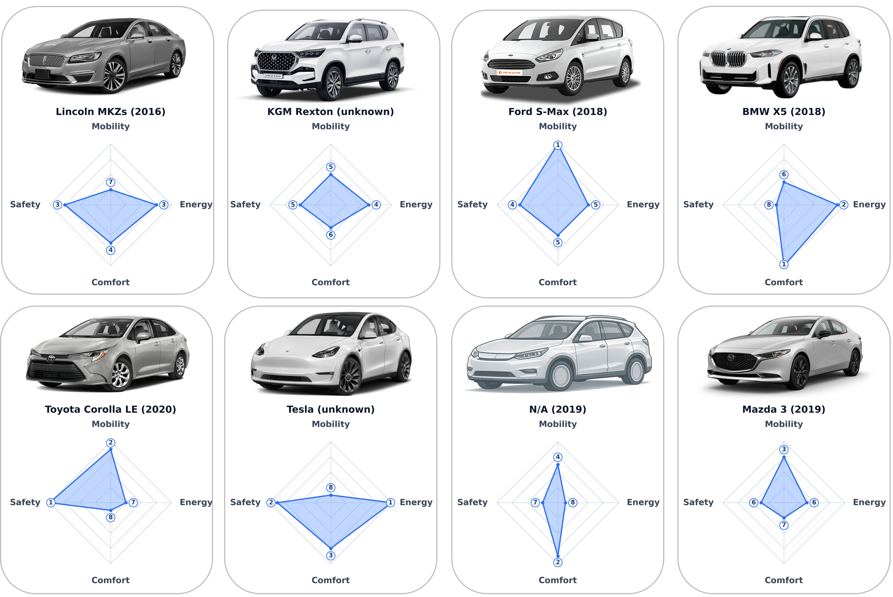

Billboard
Four independent performance rankings: Safety, Mobility, User Comfort, and Energy Efficiency. Rank 1 is best in each dimension; no composite score or overall rank is calculated.
Results
Performance Rankings

Brand and dataset metadata used by the ranking.
| Brand | Model | Year | Dataset | Supplementary Note |
|---|---|---|---|---|
| Tesla | N/A | N/A | Central Ohio ACC | The tested Tesla has been retrofitted (Xia et al., 2023). |
| Toyota | Corolla LE | 2020 | MicroSimACC | - |
| Lincoln | MKZs | 2016 | CATS ACC | - |
| N/A | N/A | 2019 | Vanderbilt ACC | Unknown commercial SUV (Wang et al., 2019). |
| KGM | Rexton | N/A | OpenACC-Casale | - |
| Ford | S-Max | 2018 | OpenACC Vicolungo | - |
| Mazda | 3 | 2019 | OpenACC Asta | - |
| BMW | X5 | 2018 | OpenACC ZalaZone | - |
Note: These results evaluate eight calibrated vehicle models under generated single-lane adaptive cruise control (ACC) car-following scenarios. They demonstrate the platform workflow and do not constitute a comprehensive real-world ranking of vehicle models or brands.
References
- Xia, X., Meng, Z., Han, X., Li, H., Tsukiji, T., Xu, R., Zheng, Z., Ma, J., 2023. An automated driving systems data acquisition and analytics platform. Transportation Research Part C: Emerging Technologies 151, 104120.
- Wang, Y., Gunter, G., Nice, M., Work, D.B., 2019. Estimating adaptive cruise control model parameters from on-board radar units. arXiv preprint arXiv:1911.06454.
- Zegeye, S. K., De Schutter, B., Hellendoorn, J., Breunesse, E. A., Hegyi, A., 2013. Integrated macroscopic traffic flow, emission, and fuel consumption model for control purposes. Transportation Research Part C: Emerging Technologies 31, 158-171.
Safety Ranking
Safety is evaluated using Time-to-Collision (TTC). The columns in the table represent TTC intervals, ordered from the collision state to increasingly safer conditions.
Estimated stationary probabilities of the TTC blocks and safety ranks for the eight calibrated PAV models. Displayed probabilities may not sum exactly to one because of rounding. \(T_{\mathrm{cap}}\) is the TTC cap used in the evaluation.
| Rank | Model | [0,0] | (0,0.25] | (0.25,0.75] | (0.75,1.5] | (1.5,3] | (3,5] | (5,8] | \((8,T_{\mathrm{cap}}]\) |
|---|---|---|---|---|---|---|---|---|---|
| 1 | Toyota Corolla LE (2020) | 0.0E+00 | 0.0E+00 | 0.0E+00 | 0.0E+00 | 5.5E-13 | 1.2E-06 | 3.8E-04 | 1.0E+00 |
| 2 | Tesla (unknown) | 0.0E+00 | 2.3E-12 | 1.6E-06 | 2.8E-05 | 1.9E-04 | 5.3E-04 | 9.9E-03 | 9.9E-01 |
| 3 | Lincoln MKZs (2016) | 5.1E-11 | 4.9E-06 | 1.3E-04 | 2.1E-04 | 5.5E-04 | 7.5E-04 | 1.7E-03 | 1.0E+00 |
| 4 | Ford S-Max (2018) | 1.4E-08 | 5.4E-06 | 1.1E-05 | 5.4E-05 | 4.7E-04 | 1.1E-03 | 1.2E-02 | 9.9E-01 |
| 5 | KGM Rexton (unknown) | 3.4E-08 | 3.7E-07 | 3.2E-05 | 9.2E-05 | 2.5E-04 | 1.1E-03 | 1.2E-02 | 9.9E-01 |
| 6 | Mazda 3 (2019) | 7.5E-08 | 6.0E-06 | 4.9E-05 | 2.1E-04 | 7.3E-04 | 1.8E-03 | 1.1E-02 | 9.9E-01 |
| 7 | N/A (2019) | 2.7E-06 | 2.5E-04 | 3.0E-04 | 6.4E-04 | 7.0E-04 | 1.8E-03 | 9.0E-03 | 9.9E-01 |
| 8 | BMW X5 (2018) | 3.3E-05 | 8.6E-04 | 1.4E-03 | 1.1E-03 | 2.1E-03 | 4.0E-03 | 5.3E-02 | 9.4E-01 |
Brand and dataset metadata used by the ranking.
| Brand | Model | Year | Dataset | Supplementary Note |
|---|---|---|---|---|
| Toyota | Corolla LE | 2020 | MicroSimACC | - |
| Tesla | N/A | N/A | Central Ohio ACC | The tested Tesla has been retrofitted (Xia et al., 2023). |
| Lincoln | MKZs | 2016 | CATS ACC | - |
| Ford | S-Max | 2018 | OpenACC Vicolungo | - |
| KGM | Rexton | N/A | OpenACC-Casale | - |
| Mazda | 3 | 2019 | OpenACC Asta | - |
| N/A | N/A | 2019 | Vanderbilt ACC | Unknown commercial SUV (Wang et al., 2019). |
| BMW | X5 | 2018 | OpenACC ZalaZone | - |
Ranking Method
Safety is quantified using Time-to-Collision (TTC), a standard rear-end risk indicator. At time t, TTC is the remaining time to collision assuming current speed and gap remain unchanged. Larger TTC indicates safer conditions, while smaller TTC indicates higher risk.
In the aggregated Markov evaluation framework, TTC is discretized into hazard-prioritized blocks:
Let \( \pi_i^k \) be the probability that PAV \( i \) operates in TTC block \( k \). We define a transformed vector \( \mathbf{z}_i \) with:
PAVs are ranked using lexicographic comparison on \( \mathbf{z}_i \) from the most hazardous block to the least hazardous block. This means we first compare collision-state probability, then proceed block-by-block only when ties occur. Under this rule, models with larger probability mass in the first differing safety-critical TTC block receive worse (numerically larger) ranks; rank 1 is best.
References
- Xia, X., Meng, Z., Han, X., Li, H., Tsukiji, T., Xu, R., Zheng, Z., Ma, J., 2023. An automated driving systems data acquisition and analytics platform. Transportation Research Part C: Emerging Technologies 151, 104120.
- Wang, Y., Gunter, G., Nice, M., Work, D.B., 2019. Estimating adaptive cruise control model parameters from on-board radar units. arXiv preprint arXiv:1911.06454.
Mobility Ranking
Mobility is measured by mean time headway under the generated driving scenarios. Smaller mean time headway receives a better mobility rank; rank 1 is best.
Mobility ranking results by model.
| Rank | Model | Time Headway (s) |
|---|---|---|
| 1 | Ford S-Max (2018) | 0.982 |
| 2 | Toyota Corolla LE (2020) | 1.055 |
| 3 | Mazda 3 (2019) | 1.076 |
| 4 | N/A (2019) | 1.292 |
| 5 | KGM Rexton (unknown) | 1.376 |
| 6 | BMW X5 (2018) | 1.492 |
| 7 | Lincoln MKZs (2016) | 1.727 |
| 8 | Tesla (unknown) | 1.797 |
Brand and dataset metadata used by the ranking.
| Brand | Model | Year | Dataset | Supplementary Note |
|---|---|---|---|---|
| Ford | S-Max | 2018 | OpenACC Vicolungo | - |
| Toyota | Corolla LE | 2020 | MicroSimACC | - |
| Mazda | 3 | 2019 | OpenACC Asta | - |
| N/A | N/A | 2019 | Vanderbilt ACC | Unknown commercial SUV (Wang et al., 2019). |
| KGM | Rexton | N/A | OpenACC-Casale | - |
| BMW | X5 | 2018 | OpenACC ZalaZone | - |
| Lincoln | MKZs | 2016 | CATS ACC | - |
| Tesla | N/A | N/A | Central Ohio ACC | The tested Tesla has been retrofitted (Xia et al., 2023). |
References
- Xia, X., Meng, Z., Han, X., Li, H., Tsukiji, T., Xu, R., Zheng, Z., Ma, J., 2023. An automated driving systems data acquisition and analytics platform. Transportation Research Part C: Emerging Technologies 151, 104120.
- Wang, Y., Gunter, G., Nice, M., Work, D.B., 2019. Estimating adaptive cruise control model parameters from on-board radar units. arXiv preprint arXiv:1911.06454.
User Comfort Ranking
User comfort is evaluated using mean squared acceleration under the generated driving scenarios. Lower mean squared acceleration receives a better comfort rank; rank 1 is best.
User comfort ranking results by model.
| Rank | Model | Acceleration Square (m2/s4) |
|---|---|---|
| 1 | BMW X5 (2018) | 0.009 |
| 2 | N/A (2019) | 0.038 |
| 3 | Tesla (unknown) | 0.040 |
| 4 | Lincoln MKZs (2016) | 0.055 |
| 5 | Ford S-Max (2018) | 0.080 |
| 6 | KGM Rexton (unknown) | 0.088 |
| 7 | Mazda 3 (2019) | 0.100 |
| 8 | Toyota Corolla LE (2020) | 0.174 |
Brand and dataset metadata used by the ranking.
| Brand | Model | Year | Dataset | Supplementary Note |
|---|---|---|---|---|
| BMW | X5 | 2018 | OpenACC ZalaZone | - |
| N/A | N/A | 2019 | Vanderbilt ACC | Unknown commercial SUV (Wang et al., 2019). |
| Tesla | N/A | N/A | Central Ohio ACC | The tested Tesla has been retrofitted (Xia et al., 2023). |
| Lincoln | MKZs | 2016 | CATS ACC | - |
| Ford | S-Max | 2018 | OpenACC Vicolungo | - |
| KGM | Rexton | N/A | OpenACC-Casale | - |
| Mazda | 3 | 2019 | OpenACC Asta | - |
| Toyota | Corolla LE | 2020 | MicroSimACC | - |
References
- Xia, X., Meng, Z., Han, X., Li, H., Tsukiji, T., Xu, R., Zheng, Z., Ma, J., 2023. An automated driving systems data acquisition and analytics platform. Transportation Research Part C: Emerging Technologies 151, 104120.
- Wang, Y., Gunter, G., Nice, M., Work, D.B., 2019. Estimating adaptive cruise control model parameters from on-board radar units. arXiv preprint arXiv:1911.06454.
Energy Efficiency Ranking
Energy efficiency is evaluated using the fuel-use proxy. Lower values receive a better rank; rank 1 is best.
Fuel-use Proxy is the mean rate predicted by the same hypothetical VT-Micro fuel model (Zegeye et al., 2013) applied to all generated driving trajectories. It compares trajectories, not actual vehicle energy use; the Tesla value is not electricity consumption.
| Rank | Model | Fuel-use Proxy (L/s) |
|---|---|---|
| 1 | Tesla (unknown) | 0.00206 |
| 2 | BMW X5 (2018) | 0.00291 |
| 3 | Lincoln MKZs (2016) | 0.00303 |
| 4 | KGM Rexton (unknown) | 0.00304 |
| 5 | Ford S-Max (2018) | 0.00324 |
| 6 | Mazda 3 (2019) | 0.00330 |
| 7 | Toyota Corolla LE (2020) | 0.00336 |
| 8 | N/A (2019) | 0.00393 |
Brand and dataset metadata used by the ranking.
| Brand | Model | Year | Dataset | Supplementary Note |
|---|---|---|---|---|
| Tesla | N/A | N/A | Central Ohio ACC | The tested Tesla has been retrofitted (Xia et al., 2023). |
| BMW | X5 | 2018 | OpenACC ZalaZone | - |
| Lincoln | MKZs | 2016 | CATS ACC | - |
| KGM | Rexton | N/A | OpenACC-Casale | - |
| Ford | S-Max | 2018 | OpenACC Vicolungo | - |
| Mazda | 3 | 2019 | OpenACC Asta | - |
| Toyota | Corolla LE | 2020 | MicroSimACC | - |
| N/A | N/A | 2019 | Vanderbilt ACC | Unknown commercial SUV (Wang et al., 2019). |
References
- Xia, X., Meng, Z., Han, X., Li, H., Tsukiji, T., Xu, R., Zheng, Z., Ma, J., 2023. An automated driving systems data acquisition and analytics platform. Transportation Research Part C: Emerging Technologies 151, 104120.
- Wang, Y., Gunter, G., Nice, M., Work, D.B., 2019. Estimating adaptive cruise control model parameters from on-board radar units. arXiv preprint arXiv:1911.06454.
- Zegeye, S. K., De Schutter, B., Hellendoorn, J., Breunesse, E. A., Hegyi, A., 2013. Integrated macroscopic traffic flow, emission, and fuel consumption model for control purposes. Transportation Research Part C: Emerging Technologies 31, 158-171.
Submit a Result
For results submissions, please contact technical contributor Hang Zhou (hzhou364@wisc.edu).